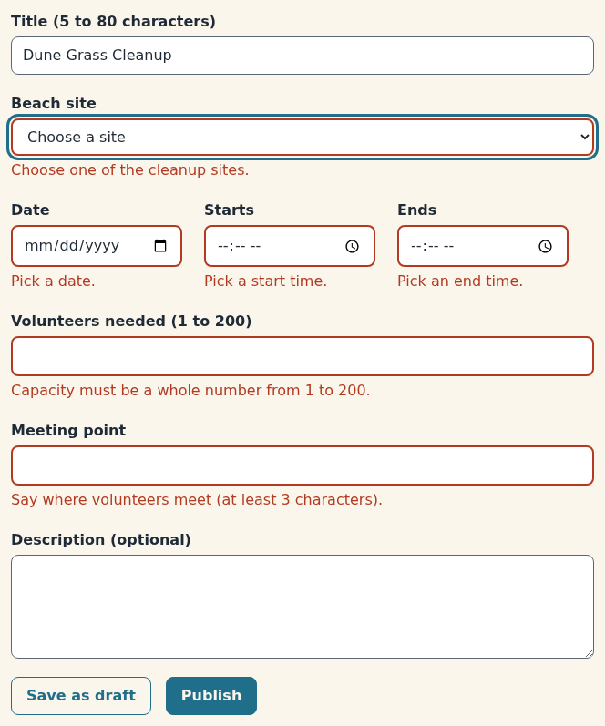

Session 11: Custom Hooks, Refs and the DOM
How to teach Lessons 4.2 and 4.3 of React + TypeScript: Build a Modern Web App: custom Hooks (the Rules of Hooks inside your own, typing what a Hook returns, generic Hooks, the useApi Hook with a key and useEffectEvent, and why a function in a dependency array floods a server), then refs (values React does not watch, typed refs to elements, callback refs, ref as a prop in React 19, focus management, a portal and the browser's own dialog).
How to Use This Guide
- Same rhythm for both lessons: frame (one mental model) → live demo (you type, they follow) → guided lab (new practice, never the lesson's project) → start the lesson's project. The rest goes home.
- Type, do not paste. Every command below was run to produce the output under it, in a learner's terminal, on a copy of shoreline-hq exactly as each lesson leaves it (with the lesson's experiment file
src/Scratch.tsx). Where a lesson shows the same command, the kit's output IS the lesson's card (the generator stops otherwise). Ask for a prediction before every run. - Two lessons, 150 + 155 minutes for a learner alone; the room has 75 minutes for each. Both projects change
EventsPage.tsx: Lesson 4.2's Step 5 (the search through the API) must be finished before Lesson 4.3's Step 2 (the/shortcut). So the room does 4.2 Steps 1 to 4 and 4.3 Steps 1 and 3 (independent of Step 5), and both orders are spelled out in the homework.lesson-15-startis the catch-up for anyone who cannot finish 4.2 at home. - Keep
lesson_14.htmlandlesson_15.htmlopen in tabs: the return-shape table, the state-versus-ref table and the focus-management table are worth showing as they are. Labs live inlabs/module-11/.
Custom Hooks and refs are both "easy to type, hard to place": learners copy useApi without seeing why the key exists, and reach for refs to avoid state. Protect the two moments that make them click: the first-try flood (a Hook that looks right and sends hundreds of requests, with every tool quiet) and the state-versus-ref rule of thumb with the focus that falls to body. Everything else can be read at home.
Before the Session
- ☐ Projector machine: shoreline-hq at the END of Lesson 4.1 (your own or
lesson-14-start),.env.local, both servers, DevTools with Network › Fetch/XHR (the flood and the debounce need it) and the Elements panel (the portal's<dialog>in body). - ☐ Files to hand out: the
labs/folder withoutsolution/;lesson-14-start.zip(Lesson 4.1 finished: for anyone who did not finish Steps 4 to 6),lesson-15-start.zip(Lesson 4.2 finished: the catch-up for 4.3),lesson-16-start.zip(both lessons finished). - ☐ Run the kit check once:
python3 labs/check_labs.py module-11(8 runs, under a minute): both starters fail as shipped (Lab 4.2's flood test counts 22 requests where one is enough), both solutions pass their tests andtsc. - ☐ Board: the laminated checklist (one card, separate radios and bag counts); the return-shape table (nothing / one value / tuple with as const / object with an interface); key = WHAT, load = HOW; the whiteboard and the pocket notebook; the four focus situations (an element disappears, a form finds problems, a dialog opens, a dialog closes).
- ☐ Try the keyboard pass on the finished Lesson 4.3 code once before class (
lesson-16-start): Tab, Enter, Escape, Tab around the dialog. You will do it live.
Session 11 Agenda (3 hours)
| Clock | Minutes | Segment | What happens |
|---|---|---|---|
| 0:00 | 10 | Warm-up | Three retrieval questions on Lesson 4.1 (W1 to W3) and a show of hands: who finished Steps 4 to 6 at home? |
| 0:10 | 10 | 4.2 Frame and mental model | The laminated checklist: every crew follows the same card, and keeps its own bag count. |
| 0:20 | 20 | 4.2 Live demo | useNow, a Hook the linter does not recognize, the tuple trap, the first try that floods the API, key and useEffectEvent. |
| 0:40 | 20 | 4.2 Guided lab | labs/module-11/l4_2-custom-hooks/starter: Tasks 1 and 3 in pairs (a tuple Hook, a data Hook that must not flood). |
| 1:00 | 25 | 4.2 Start the lesson project | Steps 1 to 4: useDocumentTitle, useApi, Try again in LoadStatus, three pages on one line each. |
| 1:25 | 10 | Break | Anyone whose four pages still have their own effects: lesson-14-start is on the stick. |
| 1:35 | 10 | 4.3 Frame and mental model | The whiteboard and the pocket notebook: state redraws, a ref just remembers. |
| 1:45 | 20 | 4.3 Live demo | A ref for a timer, a ref to an element (and its null), callback refs, ref as a prop, the / shortcut, the dialog. |
| 2:05 | 20 | 4.3 Guided lab | labs/module-11/l4_3-refs-and-the-dom/starter: Tasks 1 and 2 in pairs (focus and select, a ref as a prop that keeps the focus). |
| 2:25 | 25 | 4.3 Start the lesson project | Steps 1 and 3: EventFilters takes a ref; the form focuses the first field to fix. Step 4's Dialog started. |
| 2:50 | 10 | Wrap-up | Exit ticket (3 questions), homework, bring list for Session 12. |
| Total | 180 | Ends at 3:00. |
In the room. The lessons estimate 150 + 155 = 305 minutes for a learner alone; after the warm-up, the break and the wrap-up the room has 150, 75 per lesson. Each keeps its full shape (model, demo, lab, project start).
Goes home (about 2 to 3 hours). Lesson 4.2: project Steps 5 and 6 (the events search through the API with useDebouncedValue; slow it down and break it) and the checklist, Exercises 1 and 2, the quiz, the journal, Lab 4.2's remaining task. THEN Lesson 4.3: Step 2 (the / shortcut and the focus after Clear filters, on the events page Step 5 rewrote), Steps 4 to 6 (Dialog, ConfirmDialog and the Cancel cleanup button, the keyboard check) and the checklist, Exercises 1 and 2, the quiz, the journal, Lab 4.3 Task 3. Anyone who cannot finish 4.2 starts 4.3's homework from lesson-15-start.
Protect, in this order: the first-try flood and its fix (key + useEffectEvent); the state-versus-ref rule; the focus that falls to body; 4.2 Steps 1 to 3 (Session 12's pages build on useApi). Cut first: the useNow step (describe it), the callback-ref step (Lab 4.3 Task 3 practices it), the dialog walkthrough (it is homework; show the screenshot).
Opening Segment
Warm-up
10 min- Three questions (6m). W1 to W3 on the slide and in the workbook; fingers for A to D. A miss on W1 (dependencies) is the one to fix before 4.2: useApi's key only makes sense to someone who knows what the array does.
- Show of hands (4m). Who finished Lesson 4.1's Steps 4 to 6? Four pages that each load their own data is what 4.2 extracts. Anyone who did not:
lesson-14-startnow, their own code later.
W1 A; W2 B; W3 B. The reasons are in the Answer Key.
Lesson Plans
Custom Hooks
75 min- Explain what a custom Hook is, when a plain function is the better choice, and why two components that call the same Hook do not share its state
- Follow the Rules of Hooks inside your own Hooks, and read the linter's rules-of-hooks errors
- Type what a Hook returns: nothing, one value, a tuple with as const, or an object with an interface
- Write generic Hooks (useDebouncedValue<T>, useApi<T>) whose types follow the arguments you pass
- Pass a function into a Hook safely with useEffectEvent, and explain what a data library like TanStack Query adds on top of a Hook like useApi
| 10m | Frame: four copies of one effect; a custom Hook is a function named use…; the laminated checklist; Hook vs function vs component |
| 20m | Live demo: useNow, the rules-of-hooks error, the tuple trap, the first-try flood, useApi with key and useEffectEvent |
| 20m | Guided lab: l4_2-custom-hooks/starter, Tasks 1 and 3 in pairs |
| 25m | Start the lesson project: Steps 1 to 4 |
From the lesson: "Every Shoreline Crew lead carries the same laminated card: check in with the harbor office, count the bags, radio when you leave. The card is the custom Hook. It is written once, and every crew follows it. But each crew that follows the card has its own radio, its own bag count and its own sign-off. Nobody shares a bag count because they share a card." Then the sentence to write under it: custom Hooks share logic, never state.
Then the table that decides what a piece of repeated code becomes: it only calculates → a plain function (formatDate); it returns elements → a component (LoadStatus); it calls Hooks and returns values → a custom Hook (useApi). And the habit: write it twice before extracting, and name the Hook after what it gives (useNow), not how it works.
In shoreline-hq at the end of Lesson 4.1 (the four pages with their own effects), with src/Scratch.tsx as the experiment file. The outputs below come from the same files in a copy of the app; ask for a prediction before every run.
- A Hook is a function named use… (3m). In shoreline-hq (the finished Lesson 4.1 code),
src/Scratch.tsxagain. Type the lesson'suseNowand the two clocks that use it. Read aloud: "a function whose name starts with use may call Hooks. No registration, no import: the name is the whole contract."import { useEffect, useState } from 'react' // A custom Hook: a function whose name starts with "use" and that calls other Hooks function useNow(intervalMs: number): Date { const [now, setNow] = useState(() => new Date()) useEffect(() => { const timer = setInterval(() => setNow(new Date()), intervalMs) return () => clearInterval(timer) }, [intervalMs]) return now } export function TideClock() { const now = useNow(1000) return <p>Crew time: {now.toLocaleTimeString('en-US')}</p> } export function MinuteClock() { const now = useNow(60_000) return <p>This minute: {now.toLocaleTimeString('en-US', { timeStyle: 'short' })}</p> }
Two clocks, two timers: each component that calls the Hook gets its own state and its own effect. The laminated checklist on the board: shared card, separate bag counts. - A Hook the linter does not recognize (4m). The lesson's tab-title effect, extracted into a function with an ordinary name,
setTabTitle. Predict both tools, then:npx tsc -b npm run lint
(npx tsc -b prints nothing) × react-hooks(rules-of-hooks): React Hook "useEffect" is called in function "setTabTitle" that is neither a React function component nor a custom React Hook function. React component names must start with an uppercase letter. React Hook names must start with the word "use". ╭─[src/Scratch.tsx:5:3] 3 │ // Not named use…: the linter cannot tell that it calls Hooks 4 │ function setTabTitle(title: string) { · ─────┬───── · ╰── Outer function 5 │ useEffect(() => { · ────┬──── · ╰── Hook is called here 6 │ document.title = title ╰──── Found 0 warnings and 1 error. Finished in …ms on 34 files with 150 rules using … threads.tsc has no opinion: types say nothing about where Hooks run. The linter's rules-of-hooks is an ERROR, and its last sentence is the fix: rename touseTabTitle. With the use name, the linter also checks the rules inside the Hook. - The tuple trap (4m). A toggle Hook that returns
[on, toggle], used asconst [open, toggle] = useToggle(false). Predict, then:npx tsc -b
src/Scratch.tsx:12:48 - error TS2322: Type 'boolean | (() => void) | undefined' is not assignable to type 'MouseEventHandler<HTMLButtonElement> | undefined'. Type 'boolean' is not assignable to type 'MouseEventHandler<HTMLButtonElement>'. 12 <button type="button" aria-expanded={open} onClick={toggle}> ~~~~~~~ node_modules/@types/react/index.d.ts:2469:9 - The expected type comes from property 'onClick' which is declared here on type 'DetailedHTMLProps<ButtonHTMLAttributes<HTMLButtonElement>, HTMLButtonElement>' 2469 onClick?: MouseEventHandler<T> | undefined; ~~~~~~~ Found 1 error in src/Scratch.tsx:12Read the first line:toggleisboolean | (() => void) | undefined. TypeScript infers an array literal as an array of unions;noUncheckedIndexedAccessadds undefined. Addas const: a readonly tuple, andnpx tsc -bis silent. Objects need no trick: name them with an exported interface (ApiResult<T>). - The first try floods the API (4m). Type the lesson's
useApiFirstTry(load)withloadin the array ("everything the effect uses goes in the array"), and a component that passes an inline arrow. Both tools:npx tsc -b && npm run lint
Found 0 warnings and 0 errors. Finished in …ms on 34 files with 150 rules using … threads.
Both quiet; the Network tab fills up (the lesson measured more than 700 requests in two seconds). Ask why: a new function on every render, andObject.isnever finds two functions equal. Split WHAT from HOW: akeystring decides when to load;loadis read throughuseEffectEvent. - useApi: key, load, useEffectEvent (5m). The Hook the project builds (Step 2), read top down:
shoreline-hq/src/hooks/useApi.ts
export function useApi<T>(key: string, load: (signal: AbortSignal) => Promise<T>): ApiResult<T> { const [state, setState] = useState<LoadState<T>>({ kind: 'loading' }) const [attempt, setAttempt] = useState(0) // The latest load function, without making the effect run again when it changes const loadLatest = useEffectEvent(load) useEffect(() => { const controller = new AbortController() loadLatest(controller.signal) .then((data) => setState({ kind: 'ready', data })) .catch((error: unknown) => { if (controller.signal.aborted) return console.error(error) setState({ kind: 'failed', message: describeError(error) }) }) return () => controller.abort() }, [key, attempt])
loadLatesthas the same type asload; the array is[key, attempt](the effect never reads key: it is there only to say when);reloadis Lesson 4.1's Exercise 1 built in. On a new key the old data stays until the new answer arrives (keep previous data). The linter guards both mistakes: -
npm run lint
⚠ react-hooks(exhaustive-deps): Functions returned from `useEffectEvent` must not be included in the dependency array. ╭─[src/hooks/useApi.ts:32:21] 31 │ return () => controller.abort() 32 │ }, [key, attempt, loadLatest]) · ────────── 33 │ ╰──── help: Remove the dependency from the dependency array.That isloadLatestput in the array. Callingloaddirectly instead gives two warnings, one of themReact Hook useEffect has a missing dependency: 'load': adding it brings the flood back. useEffectEvent is how you tell React "read the latest, do not react to it".
- An early return before a Hook, inside the Hook.
if (title === '') returnaboveuseEffect. The linter reports it as an error (React Hook "useEffect" is called conditionally). Coach: "call the Hook every time; put the condition inside the effect." - "Everything the effect uses goes in the array", including a function. The flood. Coach: "what should make it load again: a new search, or a new function object?" (Self-check Q4, Q6.)
- Returning an array and destructuring it. TS2322 at the call site, far from the Hook. Coach: "hover the name: what type did it get?" then
as const, or an object with an interface. (Self-check Q3.)
Folder: labs/module-11/l4_2-custom-hooks/starter/ with labs/module-11/l4_2-custom-hooks/TASKS.md; your reference is labs/module-11/l4_2-custom-hooks/solution/. Three Hooks on new material: a bag counter returned as a tuple (as const, checked by tsc), a generic Hook with a timer and its cleanup (Vitest's fake timers, so nothing waits), and a data Hook that floods the test's pretend server until a key decides when to load. Needs npm install once in starter/.
- Run it as shipped (3m):
npm test: all six fail; read the Task 3 failure aloud:TODO 3: requests sent for one key: expected 22 to be 1(the test's server gives up after twenty).npm run typecheck: the tuple errors (TS2349 "This expression is not callable"). - Task 1 in pairs (5m):
reset, thenas const(the type check, not the test, tells them). - Task 3 (9m): useEffectEvent +
[key, attempt]+ reload. Ask the first pair that passes: "what decides when it loads now?" - Expected when done: the solution's run:
✓ src/lab.test.tsx (6 tests)
✓ Task 1: count, add, reset
✓ Task 1: two volunteers, two counts (Hooks share logic, never state)
✓ Task 2: one tip at a time, the next one every interval, then from the start
✓ Task 2: an empty list gives undefined and starts no timer
✓ Task 3: one request per key, however often the page renders
✓ Task 3: a new key loads again, and so does reload
Tests 6 passed (6)- Debrief (3m): "Two volunteers, two counts: why?" (each component has its own state). "Why did Task 3's starter send more than one request?" (a new function every render, in the array).
- Fast finishers: Task 2 (generic
useRotatingTip<T>; the type check proves strings in, string out), then the stretch.
The lesson project is Three Hooks for the HQ, six steps. In the room: Steps 1 to 4 (25 minutes). They are the extraction itself; Step 5 rewrites the events page and goes home with Step 6.
- Step 1 (4m):
useDocumentTitle(title): void, Lesson 4.1's Exercise 2 with a name. Why restore the old title? From Lesson 6.1 the router swaps pages without a reload. - Step 2 (7m):
useApi.tsfrom the lesson, typedApiResult<T>;npx tsc -bpasses with nothing using it yet. HoveruseApianywhere: the/** */comment shows. - Step 3 (4m): LoadStatus's optional
onRetryand the Try again button; the four pages still compile. - Step 4 (10m): SitesPage, NewEventPage and HomePage on one line each.
getSitesfitsloadas it is; the home page's inline arrow is fine now. Stop the API and reload /sites: Try again.

- Done in the room = three pages on useApi with Try again and tab titles. Goes home: Step 5 (the events search through the API:
useDebouncedValue,URLSearchParams, two useApi calls; pelican finds three cleanups with one request) and Step 6 (check, slow down with--latency=1500to see the previous results kept, break).

Ask these out loud during the demo and the lab:
- What makes a function a custom Hook? Answer: its name starts with use and it calls Hooks.
- Two components call the same Hook: do they share its state? Answer: no, each gets its own (logic shared, never state).
- Why
as conston a returned array? Answer: without it TypeScript infers an array of unions, so each name gets every type. - In useApi, what is the key for, and what is load for? Answer: the key says WHAT is loaded and WHEN to load again; load says HOW, read through useEffectEvent.
Workbook self-check, items Q1 to Q6 (at home).
Answers: Q1 C) Code that calls useState and useEffect and returns a value to the component; Q2 oxlint's rules-of-hooks, an ERROR (tsc is silent); rename setTabTitle to useTabTitle; Q3 A) return [on, toggle] as const; Q4 D) Hundreds of requests, with both tools quiet: every render made a new function; Q5 One (q=pelican) after the typing pauses; seven with delay 0, one per letter; Q6 B) Remove loadLatest from the array: only the key and attempt decide when to load. Full set with explanations in the Answer Key.
Support: learners lost in generics read useApi('/sites', getSites) aloud with the hover open: "T comes from getSites' return type". For Step 2, let them paste useApi and spend the time on reading it line by line with a partner.
Stretch: Lab 4.2 Task 2 and the stretch (updating); the lesson's Exercise 3 ("Searching…") and the Bonus Challenge (useStoredState<T> with a check of what localStorage returns).
Refs and the DOM
75 min- Explain what a ref is, when to choose a ref over state, and why reading a ref while rendering is a mistake
- Type refs to values and to DOM elements (useRef<HTMLInputElement>(null)), and read the errors TypeScript gives for null, the wrong element and React 19's required argument
- Use callback refs, including React 19's cleanup function, and avoid the arrow-function return that React 19's types reject
- Pass a ref to your own component as an ordinary prop, the React 19 way
- Manage focus on purpose: a keyboard shortcut, the first invalid field, and a modal dialog rendered through a portal that gives the focus back when it closes
| 10m | Frame: a value React does not watch; the whiteboard and the pocket notebook; state vs ref; the four focus situations |
| 20m | Live demo: a timer ref, a DOM ref and its null, callback refs, ref as a prop, the / shortcut, the dialog |
| 20m | Guided lab: l4_3-refs-and-the-dom/starter, Tasks 1 and 2 in pairs |
| 25m | Start the lesson project: Steps 1 and 3, then Step 4 started |
From the lesson: "At a Shoreline Crew cleanup, the whiteboard on the van shows the plan: who is on which stretch, how many bags are full. When the lead changes the whiteboard, everyone looks up and adjusts. That is state. The lead also carries a pocket notebook: the van key's hiding spot, the harbor office's number, when the last radio check was. Writing in it changes nothing for anyone else, and it is still there at the end of the day. That is a ref. If the crew needs to see something, it goes on the whiteboard."
Then the second job of a ref: holding a real element, for things you DO to it (focus, select, showModal, scrollIntoView), never for changing what it shows. And why it matters: "focus is the keyboard user's cursor. When a button disappears, a form finds problems or a dialog opens and closes, your app decides where it goes; otherwise it lands at the top of the page."
In shoreline-hq at the end of Lesson 4.2 (or lesson-15-start). Scratch experiments first, then the finished project code (stage files, checked by the kit).
- A ref for a timer (3m). The lesson's SweepTimer: the seconds are on the screen (state), the interval id is not (a ref). Show the state-versus-ref table: changing a ref renders nothing, and reading
ref.currentduring render goes stale silently (the linter's react(refs) rule). The rule of thumb on the board: if the screen should change when the value changes, it is state; otherwise it can be a ref. - A ref to an element, and its null (4m). QuickNote:
useRef<HTMLTextAreaElement>(null)on the textarea, a button that focuses it. TypenoteRef.current.focus()without the?.first:npx tsc -b
src/Scratch.tsx:7:5 - error TS18047: 'noteRef.current' is possibly 'null'. 7 noteRef.current.focus() ~~~~~~~~~~~~~~~ Found 1 error in src/Scratch.tsx:7The| nullis honest: before the first render and after the element leaves there is none.?.costs nothing. The type argument names the element; a div's ref on an input is TS2322 ("HTMLDivElementis missing the following properties from typeHTMLInputElement: accept, alt, autocomplete, capture, and 54 more"). - Callback refs and their cleanup (4m). CrewButtons keeps three buttons in a Map by name with a callback ref that returns a React 19 cleanup. Remove the braces around the cleanup's body:
npx tsc -b
src/Scratch.tsx:18:11 - error TS2322: Type '(el: HTMLButtonElement | null) => () => boolean' is not assignable to type 'Ref<HTMLButtonElement> | undefined'. Type '(el: HTMLButtonElement | null) => () => boolean' is not assignable to type '(instance: HTMLButtonElement | null) => void | (() => VoidOrUndefinedOnly)'. Type '() => boolean' is not assignable to type 'void | (() => VoidOrUndefinedOnly)'. Type '() => boolean' is not assignable to type '() => VoidOrUndefinedOnly'. Type 'boolean' is not assignable to type 'VoidOrUndefinedOnly'.The last line says it: a ref cleanup must return nothing, anddeletereturns a boolean. The same rule rejects the old tutorial lineref={(el) => (buttonRefs.current[i] = el)}(Common Mistakes; Lab 4.3, Task 3). Fix: braces. - Ref as a prop (React 19) (3m). The project's Step 1: EventFilters declares
ref?: Ref<HTMLInputElement>and puts it on the search input, the element a page would want to focus. No forwardRef (a version note in the lesson; it still compiles in 19.3).shoreline-hq/src/components/EventFilters.tsxinterface EventFiltersProps { query: string status: StatusFilter onQueryChange: (query: string) => void onStatusChange: (status: StatusFilter) => void onClear: () => void /** Points at the search box, so the page can move the focus there */ ref?: Ref<HTMLInputElement> }
- The / shortcut: a document listener in an effect (3m). The page listens on
document, outside anything React renders: an effect with a cleanup,[]because a ref object never changes.shoreline-hq/src/pages/EventsPage.tsx// Press / anywhere on the page (except in a field) to jump to the search box useEffect(() => { function handleKeyDown(event: KeyboardEvent) { if (event.key !== '/' || event.ctrlKey || event.metaKey || event.altKey) return if (isTyping(event.target)) return event.preventDefault() // or the / would be typed into the search box searchRef.current?.focus() } document.addEventListener('keydown', handleKeyDown) return () => document.removeEventListener('keydown', handleKeyDown) }, [])
KeyboardEventhere is the BROWSER's type. If VS Code auto-imports React's, tsc saysNo overload matches this call(TS2769, twice: add and remove).preventDefault()keeps the/out of the box (measured). WCAG 2.1.4: single-key shortcuts should be possible to turn off (Going Further). - A portal and the browser's own dialog (3m). Dialog: a portal puts the
<dialog>in body, a ref callsshowModal()(top layer, the page inert, Escape, initial focus), a second ref remembers the opener so the cleanup can give the focus back. Render it to open, stop rendering it to close.shoreline-hq/src/components/Dialog.tsxexport function Dialog({ title, onClose, children }: DialogProps) { const dialogRef = useRef<HTMLDialogElement>(null) const openerRef = useRef<Element | null>(null) const titleId = useId() useEffect(() => { const dialog = dialogRef.current if (dialog === null) return if (!dialog.open) { openerRef.current = document.activeElement // remember where the focus was dialog.showModal() // focus moves into the dialog, the page behind it goes inert } return () => { // Closing: give the focus back to the control that opened the dialog const opener = openerRef.current if (opener instanceof HTMLElement) opener.focus() } }, [])
Then on the projector, keyboard only: Tab to Cancel cleanup, Enter (focus on Keep it), Escape (back on the button). Events from inside the portal bubble through React's tree, not the DOM's.
- Showing a ref's value on the screen.
{clicksRef.current}in JSX looks right until the setter that happened to render is removed. The linter warns:react(refs): Cannot access refs during render. Coach: "should the screen change when it changes? Then it is state." (Self-check Q7.) - React's KeyboardEvent in a document listener. VS Code's auto-import picks the wrong one; TS2769 "No overload matches this call". Coach: "line 6 of the message: a browser Event is missing React's properties". Remove the import.
useRef<number>()from older code. TS2554 "Expected 1 arguments, but got 0": React 19 wants the starting value,useRef<number | null>(null).
Folder: labs/module-11/l4_3-refs-and-the-dom/starter/ with labs/module-11/l4_3-refs-and-the-dom/TASKS.md; your reference is labs/module-11/l4_3-refs-and-the-dom/solution/. Testing Library clicks and types like a person in a browser-like page, so the tests can ask where the focus is. Needs npm install once in starter/.
- Run it as shipped (2m):
npm test(four failures),npm run typecheck: the old tutorial callback ref (TS2322) and twoProperty 'ref' does not existerrors (Task 2a). - Task 1 (5m): a DOM ref,
focus()andselect(). Circulate foruseRef(null)without the element type (current isnullforever in TypeScript's eyes). - Task 2 (9m):
ref?: Ref<HTMLInputElement>on SearchField's props and the input; then FilterBar's clear focuses the box BEFORE the button goes. The test file's@ts-expect-errorline proves a div's ref does not fit. - Expected when done:
✓ src/lab.test.tsx (4 tests)
✓ Task 1: the button puts the focus in the field with the whole code selected
✓ Task 2a: a ref passed to SearchField reaches the input
✓ Task 2b: after Clear, the search is empty, the button is gone and the focus is in the search box
✓ Task 3: the button jumps to the first crew member not checked yet
Tests 4 passed (4)- Debrief (3m): "Why focus the search box in the click handler, before React renders?" (the box is already there; only the button goes). "Which element does SearchField let a parent reach, and why that one?"
- Fast finishers: Task 3 (callback refs in a Map with a cleanup), then the stretch (Escape clears, with React's KeyboardEvent this time).
The lesson project is Focus Where It Belongs, six steps. Step 2 changes the events page Lesson 4.2's Step 5 rewrote, so in the room: Step 1 (EventFilters takes a ref), Step 3 (the form focuses the first field to fix), then start Step 4 (Dialog).
- Step 1 (6m):
Refimport, the optional prop,ref={ref}andaria-keyshortcuts="/"on the search input.npx tsc -b: nothing passes it yet, no error. - Step 3 (8m):
formRefon the form, an effect on[state]that focuses the first[aria-invalid="true"]field;querySelector<HTMLElement>(without the type argument the result has no focus method). Publish an empty form: the title; a good title: the Beach site menu.

- Step 4 started (11m):
Dialog.tsxfrom the lesson, read through the two refs, the!dialog.openguard (Strict Mode) and the cleanup that returns the focus. - Goes home: Step 2 (the
/shortcut and the focus after Clear filters, after 4.2's Step 5), Step 4's CSS, Step 5 (ConfirmDialog, the Cancel cleanup button on scheduled cards), Step 6 (the keyboard pass) and the checklist.

Ask these out loud:
- State or ref: the id of a running timer? The number of bags shown on screen? Answer: ref; state.
- Why is
useRef<HTMLInputElement>(null).currentpossibly null? Answer: before the element is on the page and after it leaves. - What may a React 19 callback ref return? Answer: nothing, or a cleanup function that returns nothing.
- When a dialog closes, where should the focus go, and who puts it there? Answer: back to the control that opened it; the browser on Escape, our cleanup when the dialog is removed.
Workbook self-check, items Q7 to Q12 (at home).
Answers: Q7 B) In useRef: it survives renders and changing it renders nothing; Q8 noteRef.current?.focus(): before the element is on the page (and after it leaves) current is null; Q9 D) The cleanup arrow returns delete's boolean; a ref cleanup must return nothing; Q10 The input (what a parent wants to focus); the component decides by putting ref on it; ref?: Ref<HTMLInputElement>; Q11 A) On the page's body: the next Tab starts again at the skip link; Q12 C) Escape: the browser returns the focus itself; a button that removes the dialog: only the cleanup returns it. Full set with explanations in the Answer Key.
Support: one card on the desk: "screen changes when it changes → state · otherwise → ref · ?. on every .current". For the dialog, let them read the lesson's focus-journey diagram before typing.
Stretch: Lab 4.3 Task 3 and the stretch; the lesson's Exercise 1 (useShortcut with useEffectEvent) and Exercise 3 (callback refs instead of querySelector); Going Further (a switch to turn the / shortcut off, as WCAG asks).
Closing
On the slide. Sort the answers before Session 12: question 2's pile tells you whether useApi's key needs another minute in the warm-up (Session 12's Suspense cache has the same "same promise every render" idea).
- Two pages call
useApi('/sites', getSites)at once. How many requests, and do they share the result? Answer: two (four on the dev server), each with its own state: Hooks share logic, never state. - In
useApi(key, load), what does the key decide, and why isloadnot in the dependency array? Answer: when to load again (what is loaded); load is new on every render, so it is read through useEffectEvent instead of triggering the effect. - Name one value you would keep in a ref and one you would keep in state, from today's code. Answer: e.g. the dialog's opener or the search input (ref); the search text or whether the dialog is open (state).
- Lesson 4.2 first: project Steps 5 and 6 and the checklist; Exercises 1 and 2; the Quick Quiz; the journal; Lab 4.2's remaining task.
- Then Lesson 4.3: project Step 2 (the
/shortcut on the events page you just rewrote), Steps 4 to 6 and the checklist; Exercises 1 and 2; the Quick Quiz; the journal; Lab 4.3 Task 3. - Workbook self-check Q1 to Q12.
- Behind? Start 4.3's homework from
lesson-15-start(Lesson 4.2 finished) rather than skipping it.
- Lesson 4.3 finished (or
lesson-16-start), both servers starting. - Session 12 teaches Lessons 4.4 and 5.1: a page for each cleanup that reads its data with
use()inside Suspense and an error boundary, then the check-in desk with useReducer. Session 13 opens with Checkpoint 2 (Modules 4 and 5 so far). - The workbook and your list of Hooks for your own app.
If You Run Long or Short
- Protect: the first-try flood and key + useEffectEvent; state versus ref; the focus that falls to body; 4.2 Steps 1 to 3.
- Cut first (saves 6m): useNow and the callback-ref demo steps.
- Cut second (saves 11m): 4.3's Step 4 start (the dialog is homework; show the screenshot).
- Cut third (saves 9m): 4.2's lab Task 1 (do Task 3 only: it is the lesson's core idea).
- 4.2's Step 5 together: the debounced search through the API, then the Network tab showing one request for
pelican. - The early-return mistake live (rules-of-hooks inside a Hook):
× react-hooks(rules-of-hooks): React Hook "useEffect" is called conditionally. React Hooks must be called in the exact same order in every component render.
╭─[src/Scratch.tsx:5:3]
4 │ if (title === '') return
5 │ ╭─▶ useEffect(() => {
6 │ │ document.title = title
7 │ ├─▶ }, [title])
· ╰──── This Hook call is not reachable on every render path.
8 │ }
╰────
help: Move the Hook call before the condition, or call it unconditionally and branch inside the Hook/effect instead.
Found 0 warnings and 1 error.
Finished in …ms on 34 files with 150 rules using … threads.- 4.3's Step 2 on the projector after the Step 5 demo:
/focuses the search; Clear filters keeps the focus.